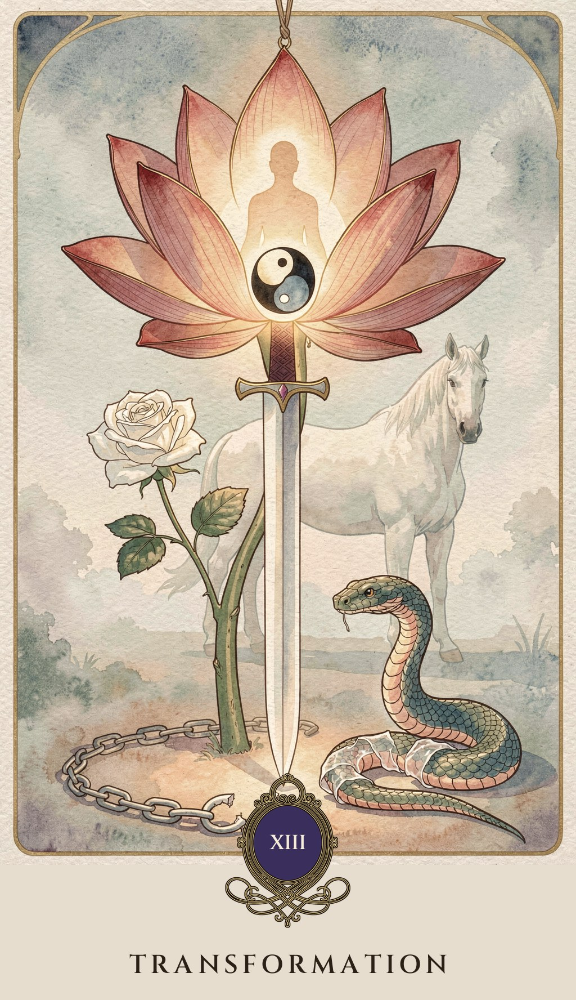
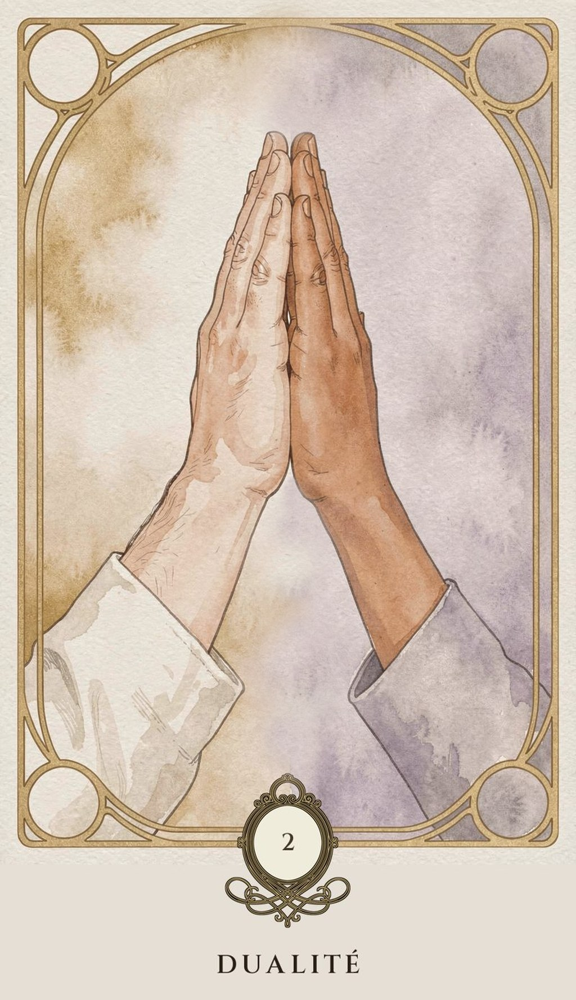
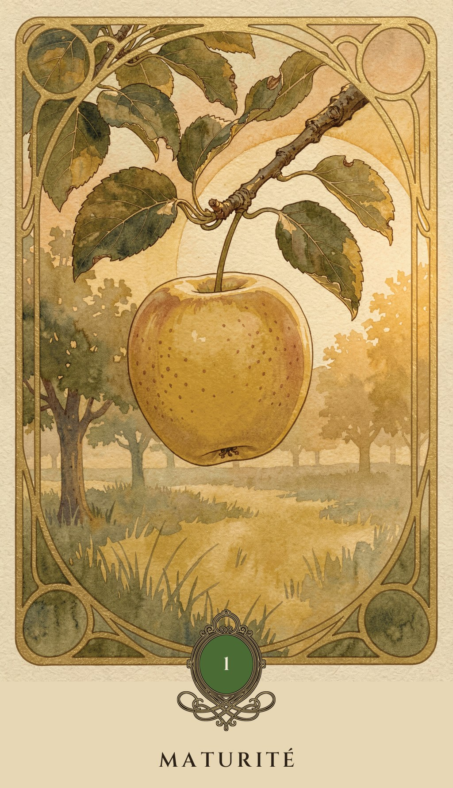

Maquette jetable : ta palette, ta typo et tes vraies cartes, sur un écran de téléphone. Rien n'est encore touché dans l'app. Choisis en voyant : une variante pour l'entrée (bloc 2), puis valide l'écran d'un tirage (bloc 3) et l'après-tirage (bloc 4).
Après un tirage à trois cartes, l'écran affiche 13 choix avant la première ligne de lecture : 6 modes, 3 façons de lire, 4 grilles. Les tirages sont rangés par leur forme, pas par ce qu'on vient chercher.
Le jeu des 79
Tarot
◇ Comprendre ce tirage



Règles enfreintes
Le principe commun aux trois variantes : on entre par l'intention (Jakob : c'est ainsi que les grandes apps de tarot rangent leurs tirages), et chaque tirage montre sa forme en miniature — le signifiant qui distingue d'un coup d'œil une croix de trois cartes alignées. 7 tirages au lieu de 6 onglets + 3 sous-onglets ; « Au choix » devient une option de Trois cartes.
A · Étagères + schémas
Le jeu des 79
Que viens-tu chercher ?
Une carte est un miroir, pas une promesse.
Pour la journée
Pour éclairer une situation
Pour approfondir
Pour une relation
B · Liste sobre, rangée par nombre de cartes
Le jeu des 79
Choisis ton tirage
Du plus court au plus profond.
C · Garder des onglets, mais par taille
Le jeu des 79
Tarot
Un angle pour ta journée, et un geste.
Glisse sur le paquet · lâche pour piger
Une barre fine : ‹ Tirages pour revenir, le nom au centre, ⓘ pour la méthode complète. Le résumé de deux phrases reste visible (ton palier 1). Le seul autre choix est comment piger — c'est là que vit « Au choix ». Pour la croix, le choix de lecture (celtique / Osho) prend la même place.
Trois cartes
Trois cartes pour examiner une situation : ce que tu y apportes, ce qui s'y joue et ce que tu peux essayer.
La méthode complèteGlisse sur le paquet · lâche pour piger
La croix
Dix cartes réparties entre la croix et le bâton : l'atmosphère, ce qui la traverse, la base, ce qui s'éloigne, ce qui est visé…
La méthode complèteGlisse sur le paquet · lâche pour piger
Ce qui change
Les cartes, puis trois onglets soulignés (Récit · Ensemble · Liens) — et la lecture commence. Les 4 grilles passent en une seule ligne « Relire autrement » sous la lecture, qui ouvre un tiroir. 13 choix → 4.
La lecture
Trois cartes sont posées côte à côte, mais aucune famille ne domine. Chacune apporte un aspect différent de la situation…
« Relire autrement » ouvert
Les cartes ne bougent pas ; seule la question change.
Ce qui change
L'onglet garde son titre « Le Tarot » et la devise ; l'énumération des tirages disparaît du chapô (l'écran d'entrée la montre mieux). Le cadre ne change pas.